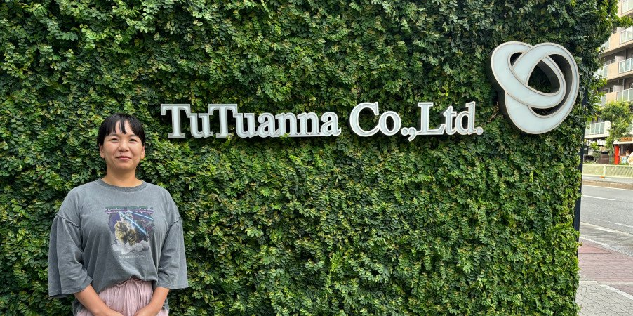
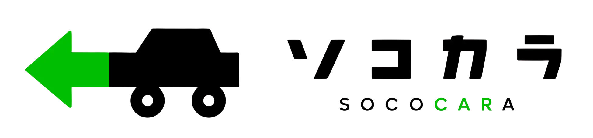
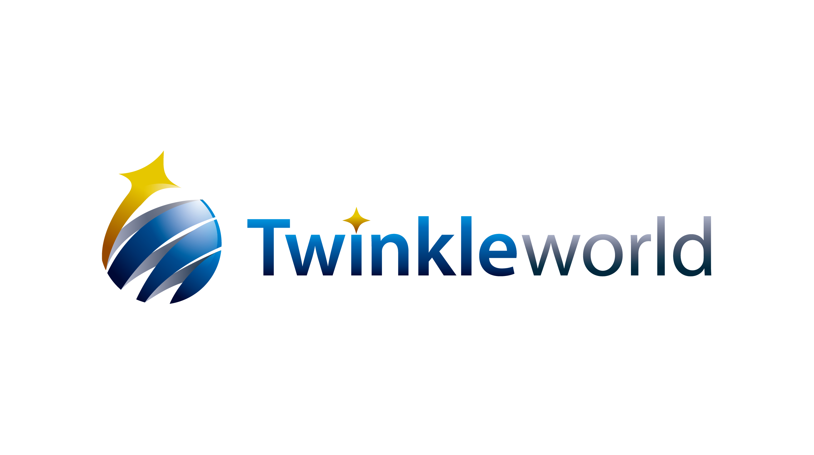
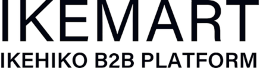
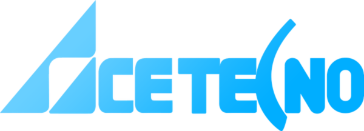
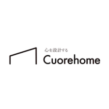
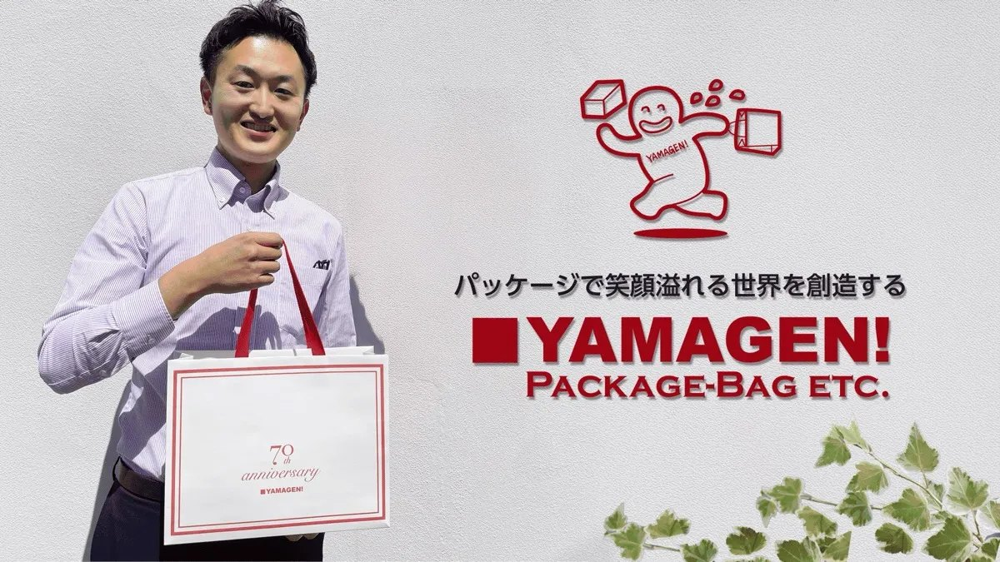
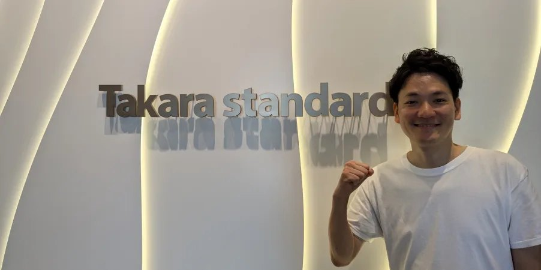
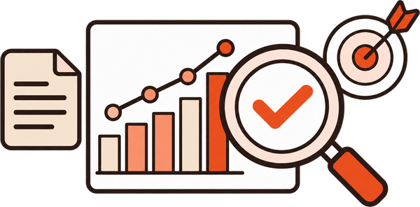

自然検索経由の購入数
6,576件→14,496件
＋7,920件の増加
株式会社チュチュアンナ





約200社の成果に向き合ってきたCominkaが
問い合わせ・商談・売上から逆算し、
成果につながるSEO施策を設計・実行します。
記事制作実績
10,000本以上
累計支援企業数
約200社
SEO経由の問い合わせ数
平均2.2倍※
※対象企業を選定し、2024年7〜9月と2026年7〜9月の自然検索経由の問い合わせ・見積もり依頼完了数を比較した各社倍率の単純平均
導入実績
アパレルEC・製造業・大手住宅設備メーカーまで。約200社の支援で積み上げた「成果の出し方」を、貴社にも。

自然検索経由の購入数
6,576件→14,496件
＋7,920件の増加
株式会社チュチュアンナ

AI経由のキーイベント数
8件→57件
＋49件の増加
株式会社山元紙包装社

自然検索流入（セッション）
139万→169万
＋302,447セッションの増加
タカラスタンダード株式会社
他社SEOとの違い
記事数で選ぶSEOから、
SEO会社を選ぶとき、
記事制作本数や施策メニューで
比較していませんか？
Cominkaは、
決まった施策を提供する
パッケージ型ではありません。
売上・問い合わせ・商談数から
逆算して、
必要な施策を設計する
「KPIコミット型SEO/AIO支援」
です。
Cominka｜KPIコミット型が達成すること
Cominkaが選ばれる理由
REASON01
事業KPIを起点に、四半期ごとの到達目標と施策の優先順位を明確化。短期施策に偏らず中長期の成果を見据えます。
REASON02
戦略立案だけでなく、記事制作・テクニカルSEO・サイト改善まで対応。ディレクターやコーダーを含む体制で施策を形にします。
REASON03
チャットを中心に疑問や相談へ迅速に対応。意思決定や実行を滞らせず、改善スピードを高めます。
他社SEOサービスとの比較
見るべきは「何を納品するか」ではなく、
「何を達成するか」です。

※固定パッケージ型との一般的な比較イメージであり、すべてのSEO会社に当てはまるものではありません。
無料相談｜オンライン30分
記事を増やしても、
問い合わせが増えない
必要なPV・問い合わせ数と、
やるべき施策が明確に
相談後に、この2つを無料でお渡しします
SEOシミュレーションレポート
どのページを、どう直せばKPIに届くのか。優先順位と必要な数値まで具体的に。
AI検索（AIO）対策のアドバイス
AIの回答に選ばれるために、今すぐ着手すべきことをお伝えします。
✓ 相談無料✓ オンライン30分✓ 無理な営業はいたしません
導入企業約200社
30秒でわかる、SEO投資の回収ライン
月30万円のSEO投資で売上5倍を目指すなら、毎月何件の問い合わせが必要か。
顧客単価と契約期間を入れるだけで、24ヶ月の売上推移と12ヶ月目に必要なKPIがわかります。
※ECサイト・BtoCのサイトのご相談にも対応しています。
固定条件：月額SEO投資30万円／シミュレーション期間24ヶ月／目標売上倍率5倍
累計SEO投資
720万円
目標累計売上
3,600万円
売上倍率
5.0倍
12ヶ月目の月次売上
—
月間新規顧客獲得数
—
月間問い合わせ数
—
現在CVRで必要な月間PV
—
現在PVで必要なCVR
—
PVを増やすか。CVRを上げるか。
目標達成に向けた最適なSEO施策を、
Cominkaが設計します。
算出方法：24ヶ月累計売上3,600万円を目標とし、新規顧客の獲得ペースが最初の6ヶ月で段階的に増加、その後一定と仮定。顧客は契約継続期間中、毎月同額を支払う。12ヶ月目の獲得顧客数から受注率・CVRで問い合わせ数・PVを逆算。
※5倍は売上ベースの目標倍率であり利益・ROIではありません。シミュレーションは逆算した目標値で、売上予測・成果保証ではありません。
無料相談｜オンライン30分
記事を増やしても、
問い合わせが増えない
必要なPV・問い合わせ数と、
やるべき施策が明確に
相談後に、この2つを無料でお渡しします
SEOシミュレーションレポート
どのページを、どう直せばKPIに届くのか。優先順位と必要な数値まで具体的に。
AI検索（AIO）対策のアドバイス
AIの回答に選ばれるために、今すぐ着手すべきことをお伝えします。
✓ 相談無料✓ オンライン30分✓ 無理な営業はいたしません
導入企業約200社
導入事例
6,576件→14,496件
実施した施策
販売している商材のビッグワードを安定して上位表示することができている。お客様の声より
8件→57件
実施した施策
問い合わせの増加、コンバージョン、売上への貢献など、具体的な成果を実感しています。お客様の声より
139万→169万
実施した施策
優先順位をつけやすくなっています。社内のノウハウも蓄積されていきます。お客様の声より
MOVIE
代表・白木とメンバーが、Cominkaの支援の進め方をご紹介します。
料金プラン
内製化を進めたいなら
yoriaiSEO
月額 3万円〜
自社でSEOを進めながら、プロに相談できる支援。オプションの追加で、必要な範囲だけ柔軟に支援します。
KPI達成まで伴走してほしいなら
KPIコミット型 SEO/AIO支援
月額 30万円〜
戦略設計から施策の実行・改善まで、事業KPIの達成にコミットして支援します。
原則6ヶ月契約／サイト規模により個別お見積もり
AIO簡易コンサル
0円
初回お打ち合わせのお時間で、
AIOの秘訣をお伝えします。
FAQ
KPIを起点に戦略設計・実行・改善を進める支援方針です。数値成果を無条件に保証するものではありません。
はい。Shopifyなどで運営しているECサイトや、BtoCのサービスサイトのSEO/AIO対策にも対応しています。
テクニカルSEO・CVR改善・AIO対策など、課題に応じて施策を設計します。
管理権限や制作体制を確認し、実施可能な範囲と役割分担を整理します。
サイトの現状や競合状況によって異なります。現状分析を踏まえ短期・中長期の目標を設計します。
KPIコミット型は原則6ヶ月を想定しています。詳細はご相談時にご案内します。
CONTACT
現在のサイト状況と事業目標をもとに、優先すべき施策とKPI達成の可能性を一緒に整理します。
導入企業